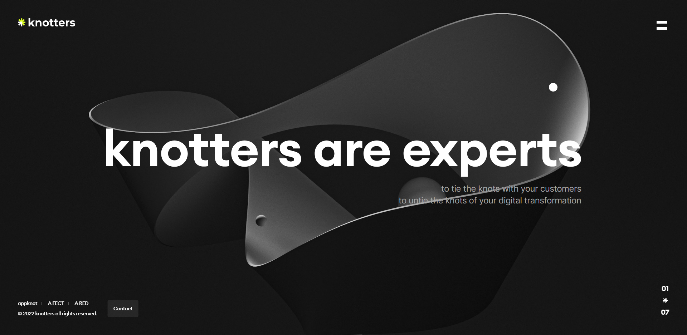

Knotters
Team Project

overview
고급스럽고 깔끔한 knotters
#Javascript #css #Team project
프로젝트 목표:
Javascript와 css를 이용한 사이트 완성
팀원:
B2O2(4명) - 김나윤, 이혜진, 김효선, 정혜진
진행과정
- 페이지 선정
- 각각 담당 엄무 선정
- 코딩 컨벤션 작성
- 서브페이지 후 메인페이지 완성
담당 엄무
적극적으로 아이디어를 내고 소통하는 팀원
about, work페이지 구현
메인페이지 보조
review
잘한 점
정해진 완료기간을 준수하여 프로젝트 완성
주어진 작업에 대한 팀원들간의 합리적인 역할 분배
팀원간의 작업물들에 대한 피드백
아쉬운 점
원래 사이트에서의 풀페이지를 구현하지 못함
가로스크롤과 페이지간의 타이밍 문제
디자인 및 기능구현이 만족스럽지 않음
배운 점
개인 프로젝트가 아닌 팀원들과 함께 진행하는 팀 프로젝트이므로 팀원들과 소통 방식에 대해 배우게 됨
하나의 과제를 나누어 진행하며 서로가 수정하는 부분을 합치고, 서로 수정하는 다양한 방식에 대해 배움
내가 가지고 있는 아이디어와 의견에 대해 팀원들에게 설명하고 수용할 수 있게 설득하는 방식과 채택되지 못한 의견에 대해 받아들이는 방법에 대해 배움